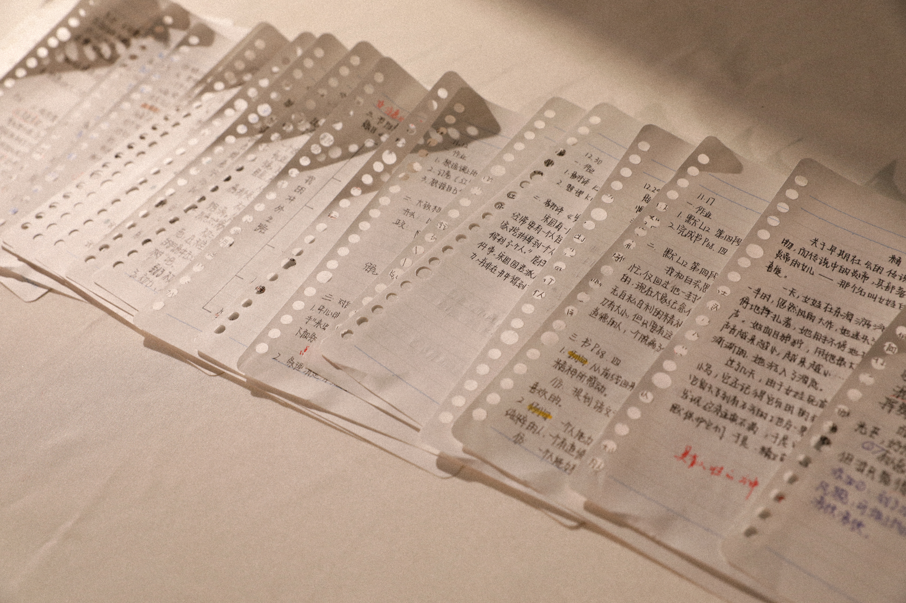
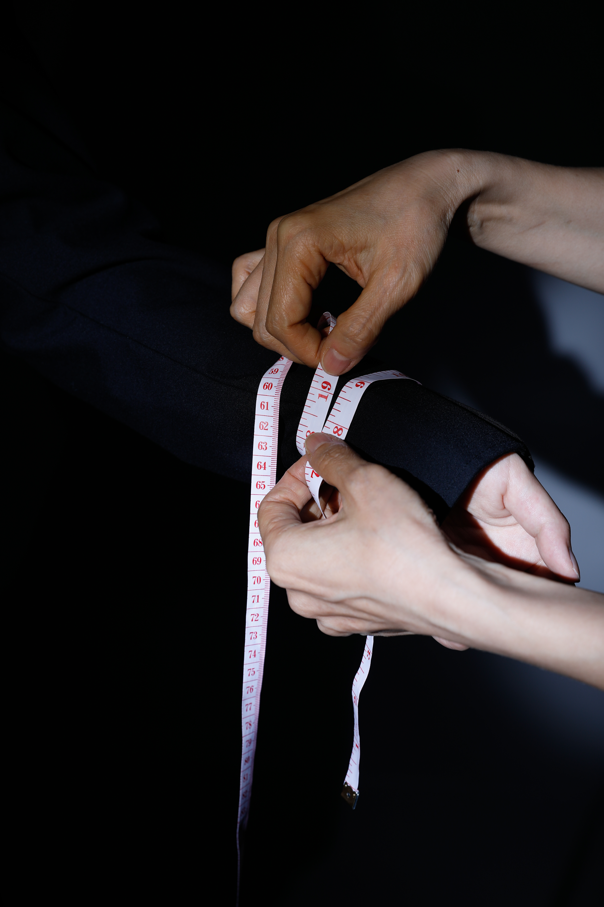

PAGE 01
INSPIRATION & STATEMENT

Care, Protection and Control — A Visual Inquiry into Disciplinary Mechanisms, Childhood Scheduling, and Bodily Surveillance

I practiced calligraphy with a brush pen at the beginning of primary school. The apron with a little rabbit pattern has always been by my side, and there are also ink marks left by the brush on the cuffs.


My mom put this sticker on my pencil case after the first parents' meeting in primary school to remind me of all the things I need to do during exams.




These are the practice books and notebooks from the time when I was preparing for middle school. The practice book on the far left was a grammar book, and I did the whole book three times to memorize those important rules. The notebook on the far right was a math correction notebook, recording all the common types of math problems that are prone to errors.


I wrote this in 6th grade. It is the outline I made for a writing prompt, telling the story of my preparation for middle school over the past two years.

This image represents the period when I was applying to a high school in Los Angeles. The colourful pens, map and notebooks show how application preparation, school research and daily schoolwork overlapped on the same desk. This desk became a space where my future was being planned, while my present academic tasks continued without pause.


She appears to be the perfect student: calm, intelligent, elegant and well-behaved. She looks like an ideal result shaped by family, school and society. But behind this perfect image, what has been hidden, compressed, or left unspoken?


Original PDF Editorial Instruction: “Starting from this image to the third image, captured from the identical camera angle, click to switch images.”. The visual continuum reveals the subtle emotional fracturing behind the seemingly calm, uniform-clad daughter.





This project explores the blurred boundary between care, protection and control within a mother-daughter relationship. It began with an old school schedule written by my mother, which made me realise that my growth had been arranged and measured from an early age. This personal discovery led me to reflect on a wider experience shared by many students: between classes, exams, tutoring and deadlines, we are trained to become the “good student” expected by family, school and society.
Through still life photography, I photographed desks from different stages of my education. Textbooks, notes, exam papers and stationery become archives of a planned life, showing how academic achievement gradually occupied my daily space. I then constructed the image of the “perfect student” through school uniform, controlled posture and staged portraiture. This figure appears calm and successful, but also artificial, as if she has been shaped into an ideal role.
This project does not aim to reject my mother’s love, but to reveal the complexity within care. A carefully planned life may offer safety, but it can also reduce the space for self-discovery. By photographing desks, uniforms and measured bodies, I want to ask: when a daughter is shaped into a perfect student, what part of herself is left unmeasured?